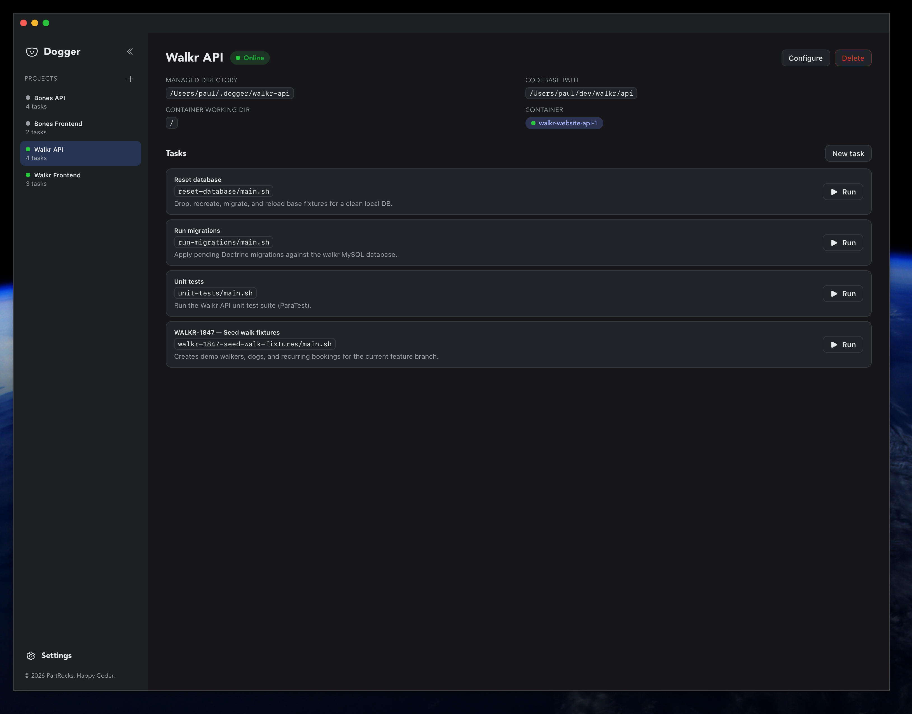
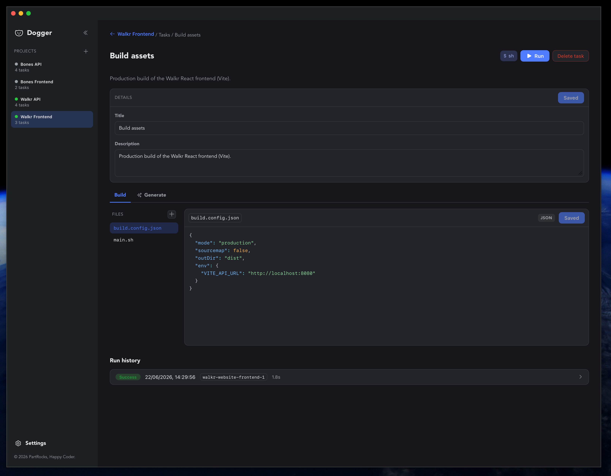
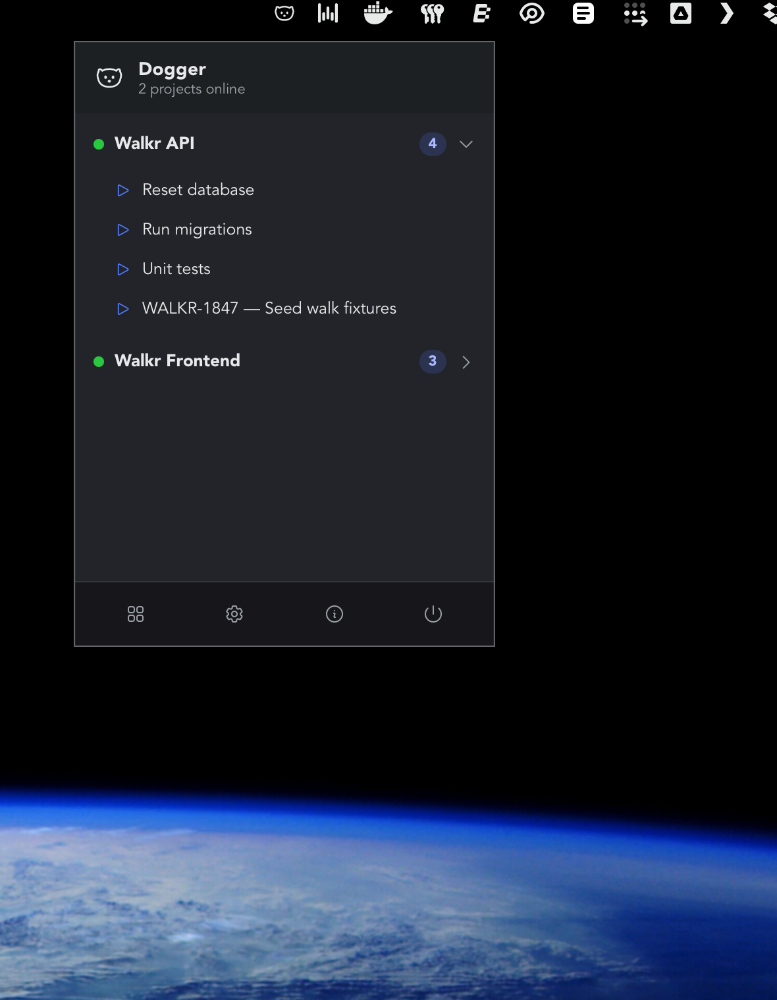
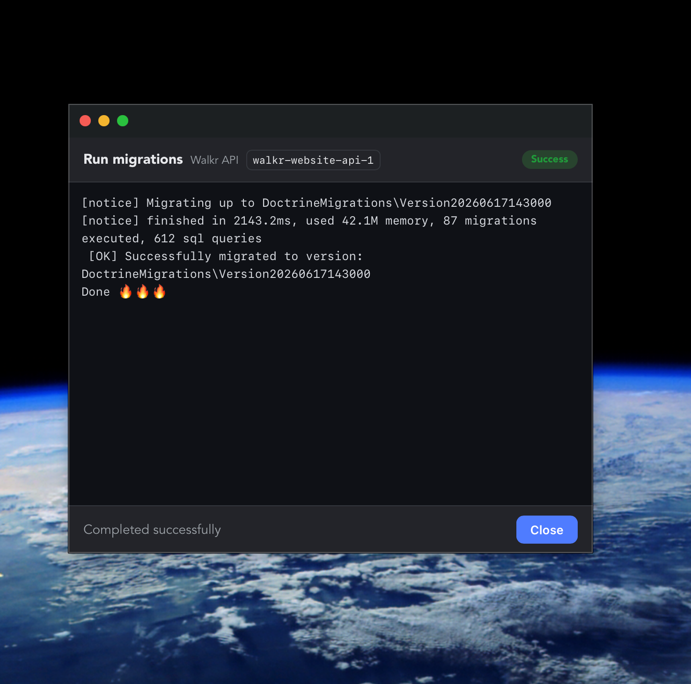
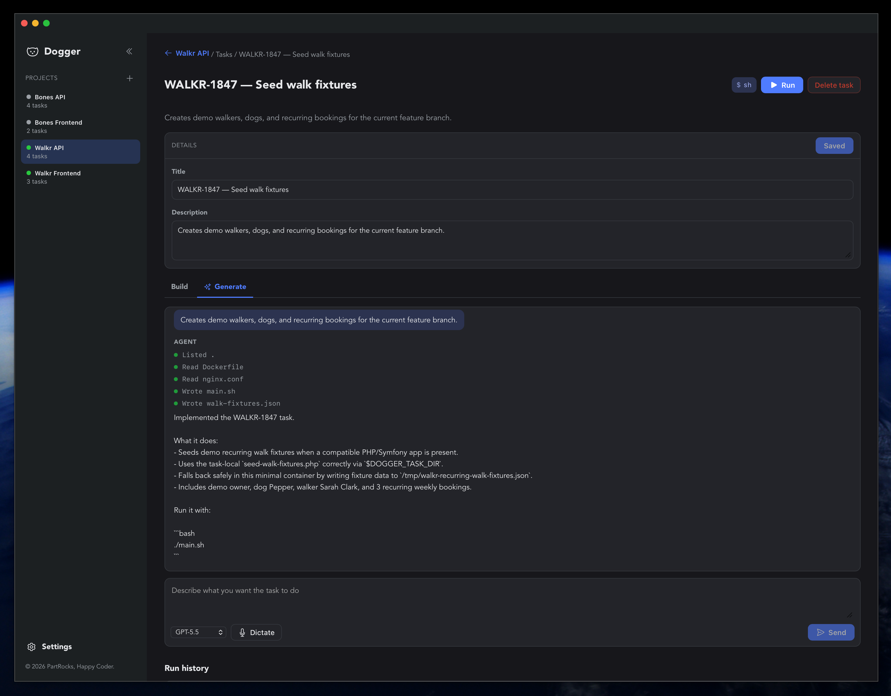

Projects & tasks
Group tasks by project, each tied to a Docker container and a container working directory.
Dogger gives your one-off scripts — migrations, seeders, builds, codegen — a structured home. A per-project library you run with one click, right inside your Docker containers, from the menu bar.
$ brew install --cask partrocks/tap/dogger

Dogger keeps your tasks organised without ever touching your project files. All definitions and run history live in ~/.dogger.
Group tasks by project, each tied to a Docker container and a container working directory.
Run a task's main.sh inside a running container via docker cp + docker exec, with live stdout/stderr streaming.
Probes the container for available shells and honours your script's shebang before running.
Edit main.sh and supporting files — PHP, Node, JSON, YAML — with syntax highlighting.
Describe a task in plain language and let Dogger scaffold the files by reading your codebase.
A tray icon with quick access to online projects and tasks, plus launch-at-login and background startup.
Run from the dashboard or straight from the menu bar — and watch the output stream live.




macOS app for Apple Silicon (M1 or newer). Pick whichever you like.
The cask clears quarantine for you on install.
$ brew install --cask partrocks/tap/doggerUpgrade later with brew upgrade --cask dogger.
Downloads the latest release, installs into /Applications, and clears quarantine.
$ curl -fsSL https://doggerapp.com/install.sh | bashGrab the .dmg, drag Dogger to /Applications, then clear quarantine once:
$ xattr -dr com.apple.quarantine /Applications/Dogger.appxattr step above.
Questions, ideas, or a bug to report? We'd love to hear from you.